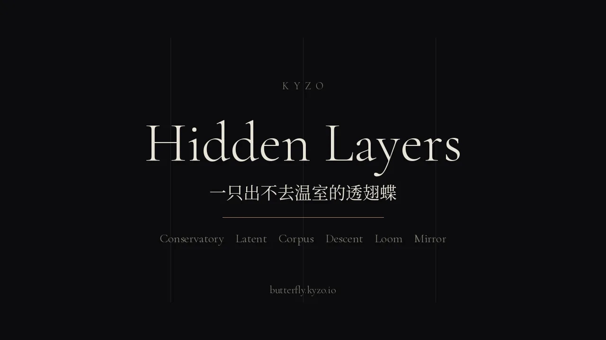

开场卡片上，一行英文标题 Hidden Layers，下面是一句很轻的说明：一只玻璃后面的蝴蝶，六个小世界。提示写着：滚动即可飞行，用鼠标左右移动。这是 kyzo（X @ky__zo，GitHub ky-zo）做的浏览器作品，在线地址是 butterfly.kyzo.io。按本站规则，下面以这件作品为中心。作者本人的宣布帖和实质性回复全文中译；仓库和作品页都没有开放许可，所以只做独立导读，引用都很短。封面是自制字体图，不是作品截帧，也不是原帖视频里的画面。

这是一件什么作品
作品的正式名称是 Hidden Layers。仓库目录叫 ky-zo/fable-butterfly，package.json 里的包名是 hidden-layers。页面标题、分享卡片和开场卡片用的都是 Hidden Layers。规范地址是 https://butterfly.kyzo.io/。GitHub 仓库页上还能看到另一个 Vercel 预览地址 hidden-layers-eta.vercel.app，本页以规范地址为准。
一只橙纹透翅蝶（Greta oto）被关在一座起雾的温室里，出不去。花园在玻璃的另一边。往下还有六层：感知、意义、记忆、学习、注意，以及自我。第六层的结尾接回第一层。仓库里的故事说明还写过一层隐喻：语言模型也是隔着一层无法穿过的媒介认识世界，记忆是别人留下的；但它要求各层不要写出 model、AI、network、training、data、token 或 neuron 这些词，把意思交给画面。
README 写：场景全是程序生成，不用模型、贴图、HDRI 或音频文件；用 three.js 和 Vite 做成，由 Claude（Anthropic 的编码智能体）根据 PROMPTS.md 里的提示词写成。最新提交的 Co-Authored-By 是 Claude Fable 5.2，仓库名也带 fable。作者在宣布帖里把这次尝试说得更明确：测试 Fable 5.2 能不能在「不用任何外部工具」的情况下做出好看的三维场景，并写「完全是 three.js」。仓库明显依赖 three.js、Vite 和字体包。若把「外部工具」理解成三维制作软件，可以和仓库对上；若按字面理解成不用任何外部工具，则不成立 ⚠️。
我们对 src/ 做了只读核对：没有看到模型、贴图、HDRI 或音频文件的加载。声音写在代码里，由 src/core/Audio.js 和各层自己的音频模块合成。界面字体来自 npm 上的 Geist、Geist Mono 与 Newsreader 包。仓库的 public/ 里另有分享用的 og.jpg、og.mp4 和网站图标，这些不是三维场景加载的资源，本页也不转载。作者说「仓库里没有模型文件、没有贴图、也没有资源加载器」，就场景代码而言可以对上；整座仓库并非完全没有图片 ⚠️。
六个世界
六层按固定顺序排好，可以继续滚到下一层，也可以按 1 到 6 跳转。名称和主题来自仓库的世界注册表，下面的说明是独立转述，不是说明书照录。
- 01 Conservatory · 感知。 起雾的温室。花园在玻璃后面。蝴蝶会看见自己的影子，也会停在另一只透翅蝶对面。
- 02 Latent · 意义。 进入它的心里：花园不是一幅画，而是按「对它意味着什么」聚在一起的光点。
- 03 Corpus · 记忆。 夜里掠过开阔的水面，靠月亮辨方向。这是一段它从未走过、只是被传下来的路。
- 04 Descent · 学习。 顺着气味、温度和光往下走，后来被一盏灯带进绕圈，直到天亮。
- 05 Loom · 注意。 丝。那是它还是别的形状时，用来把自己吊起来的那根线。
- 06 Mirror · 自我。 镜面一般的蛹。它从里面出来，第一眼看见的，仍是玻璃。
各层都有几句很短的第一人称旁白，像是这只蝴蝶自己在说。比如第一层靠近结尾的一句是：「Now I can see all of it. I am still inside.」（现在我能看见全部了。我还在里面。）本页只引这一句，不转载全部旁白。
可以怎样玩
滚动（滚轮、触控板，或在手机上向上滑）让蝴蝶向前飞，反方向则退回；有最高速度。在一层的尽头继续滚，会进入下一层。移动鼠标（手机上则左右拖）用来转向。方向键或空格是一步一步走；A 让它自己飞；M 开关声音；H 隐藏界面；F 全屏。开场也可以选「just watch」，只看不操作。深链接可以写成 /#latent，或 /?world=corpus&p=0.4，用来跳过开场、进入指定进度。?play 是更早的按住飞行操作；?debug 显示帧统计，?q=low|medium|high 可强制画质。
本站读取了公开首页和仓库说明，没有在浏览器里把六层走完，也没有打开自动播放或听声音 ⚠️。
它是怎样做出来的
作者在 2026-11-16 18:22（新加坡时间，UTC+8）发宣布帖，说这是在测试 Fable 5.2 做审美向三维场景的能力。紧接着补上了仓库和提示词链接。仓库里的 PROMPTS.md 按时间顺序抄录了 42 条发给 Claude 的提示，从 2026-11-11 16:39 UTC（新加坡时间 2026-11-12 00:39）到 2026-11-16 10:39 UTC（新加坡时间 18:39）。前期先要「让人吃惊的精细三维世界」，后来才明确提议：也许你就是一只被关在里面的蝴蝶；镜头应当是第三人称，好看见蝴蝶本身；镜头不要抖；主操作改回滚动，并加上最高速度。本页不转载这 42 条全文。
GitHub 仓库创建于 2026-11-16 11:29（新加坡时间；上游 2026-11-16T03:29:03.000Z）。公开历史上目前只有一次提交 3f71795，提交时间为 2026-11-16 18:45（新加坡时间；作者时区 +01:00），说明文字是为开场补上「用鼠标左右移动」。也就是说，公开仓库是后来一次性推上去的，并不能从提交历史里看出六层是怎样一天天长出来的。公开站 Last-Modified 为 2026-11-16 22:06:45 GMT（新加坡时间 2026-11-17 06:06:45），晚于这次提交，两边是否完全同一版本，未逐文件核对 ⚠️。
作者在帖子里还写了用量：13.2 亿 token，API 费用 905 美元。有人问做了多久、烧掉多少周额度，他回「大约两次 Fable 重置」。又有人问 905 美元值不值，他回：905 是被一份 200 美元的 Claude 订阅摊掉的，这份订阅又被 Y Combinator 的礼物摊掉，所以自己实际付的是两次重置，不是 905。这些数字和「两次重置」都是作者自报，未见账单或会话记录 ⚠️。有人问哪一层做得最久，他回：「都差不多。」
技术栈可以在仓库里直接看到：three.js 锁在 0.187.0，构建工具是 Vite 8，截图工具需要本机 Chrome。引擎部分包括行程与加载、输入、后期（景深、bloom、调色、转场）、镜头轨和声音。同一只蝴蝶在各层里换一套材质来画，轮廓和翅脉保持一致。本页不转载这些源码。
许可
仓库没有 LICENSE，源码与提示词公开可读，但未以开放许可发布。three.js（MIT）与 Geist / Newsreader 字体（OFL-1.1）各按其自身许可。
原帖全文
以下为作者英文宣布帖（长帖全文，不只是 280 字摘要）的中文译文。附件是一段约 28 秒、2082×1080 的视频。本站没有下载，也没有观看 ⚠️。
我试了一下 Fable 5.2 能不能在不用任何外部工具的情况下，做出好看的三维场景。
结果让我下巴掉下来。这个仓库里没有模型文件，没有贴图，也没有资源加载器。所有几何、材质和着色器都是用代码生成的。
13.2 亿 token。API 费用 905 美元。完全是 three.js。
在这里玩：butterfly.kyzo.io
一共六个不同的世界。去找那些藏起来的细节。
太不可思议了。下面是 GitHub 和提示词，建议收藏 ⬇️
作者：kyzo（@ky__zo）；发布：2026-11-16 18:22（新加坡时间，UTC+8）。原帖附视频，点击观看。
英文原文
I tried to test Fable 5.2's ability to build aesthetic 3d scenes without any external tools.
the result just dropped my jaw. the repo has no model files, no textures and no asset loaders. All geometry, materials and shaders are generated in code.
1.32 billion tokens. $905 api cost. fully three.js.
play it here: http://butterfly.kyzo.io
there are 6 different worlds. find all the hidden details.
it's insane.
github + prompts below, bookmark it ⬇️
作者在同一线程里的回复
主帖发出约一分钟后，作者补上仓库和提示词（2026-11-16 18:23，新加坡时间）：
仓库：https://github.com/ky-zo/fable-butterfly
提示词：https://github.com/ky-zo/fable-butterfly/blob/main/PROMPTS.md
repo: https://github.com/ky-zo/fable-butterfly
prompts: https://github.com/ky-zo/fable-butterfly/blob/main/PROMPTS.md
有人说「全是代码生成的，太疯狂了」，作者回：「而且全部是代码生成的！！！」有人问做了多久、烧掉多少周额度，他回：「大约两次 Fable 重置 😂」「两次重置 😭」。有人问哪一层做得最久，他回：「都差不多。」有人问 905 美元值不值，他在 2026-11-17 01:41（新加坡时间）回复：
905 美元是被一份 200 美元的 Claude 订阅摊掉的，这份订阅又被 @ycombinator 的礼物摊掉了 😭
所以我实际付的是两次重置，不是 905。值得，是的。
$905 was subsidised by a $200 claude plan, which was subsidised by @ycombinator gift 😭
so i paid 2 resets, not 905. worth it yes
用量、费用、订阅和「两次重置」均为作者自报，本库未复核 ⚠️。另有人问 Fable 做了多少个小时，同一线程里未见作者回复。
传播快照（约 2026-11-18 01:43，新加坡时间）：展示约 19,757，赞 227，转发 12，回复 51，收藏 161，引用 4；视频播放约 11,643 次。作者关注者约 20,186。这些数字会变 ⚠️。
注记与署名
- 这是以 Hidden Layers 为中心的项目导读。用户发来的是 GitHub 仓库；作者宣布帖一并收录。
- 本站阅读了仓库说明、公开首页 HTML，以及作者原帖和实质性回复，没有在浏览器里把六层走完，也没有观看约 28 秒的原帖视频，或试听声音 ⚠️。
- ⚠️ 「Fable 5.2 写成 / 13.2 亿 token / API 费用 905 美元 / 两次重置 / 被 200 美元订阅和 Y Combinator 礼物摊掉」，均为作者自报，未对照账单或会话。
- ⚠️ 「不用任何外部工具」与「完全是 three.js」、以及仓库对 Vite 和字体包的依赖，需按上面的说明对照理解。
- ⚠️ 仓库
public/里有分享图和 og.mp4，与「没有贴图」的场景表述不是同一件事。 - ⚠️ 公开站
Last-Modified晚于 GitHub 上这次提交，是否完全同一版本未逐文件核对。 - ⚠️ 展示、喜欢、收藏、播放次数、关注者和仓库星数（核对当时为 10 星、2 个 fork）都会变。
同类可对照、但不是同一件作品的，还有 Feather、Painted Valley、Paris Freestyle、Duskward、Papertrails。作者提到 Fable 5.2，也可以对照 官方的 Fable 5.2 提示词指南导读。
署名：kyzo（@ky__zo，GitHub ky-zo）。作品页：butterfly.kyzo.io。仓库：github.com/ky-zo/fable-butterfly。宣布帖：https://x.com/ky__zo/status/2122274109795054036。如需删除，请提交移除请求。